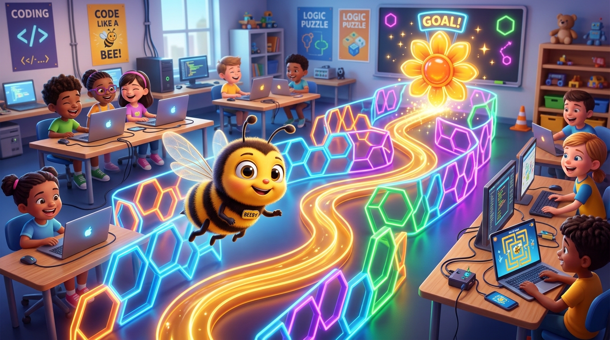

Labirin Sarang Lebah! 🎮🐝
Belajar Mengendalikan Karakter dengan 4 Tombol Panah Keyboard dan Deteksi Tabrakan Tembok (Color Sensing)!

Bantu Beeby Mencapai Sarang Madu! 🍯🚩
Dari cerita animasi dongeng, hari ini kita resmi menjadi Pembuat Game Arcade!
Apa itu Game Labirin?
Game teka-teki lorong berliku. Pemain harus memandu karakter menuju garis finish tanpa menabrak dinding!
Tembok Listrik Biru
Jika Beeby menyentuh tembok warna biru, Beeby akan tersetrum lembut "Ouch!" dan terpental kembali ke titik awal!
Misi Kemenangan
Capai bunga matahari emas di ujung labirin untuk memenangkan piala kejuaraan kelas!
Peta Ajaib Layar: Sumbu X dan Y 🗺️
Bagaimana komputer tahu arah kanan, kiri, atas, dan bawah?
Sumbu X: Jalan Mendatar (Kiri / Kanan)
• Kanan: Angka positif ➔ change x by (6)
• Kiri: Angka negatif ➔ change x by (-6)
Sumbu Y: Jalan Tegak (Atas / Bawah)
• Atas: Naik ke langit ➔ change y by (6)
• Bawah: Turun ke bumi ➔ change y by (-6)
Koding 4 Tombol Panah Keyboard ⌨️
Pasang di dalam loop forever agar lebah selalu siap digerakkan:
Sensor Tabrakan Tembok (Color Sensing) 🧱🚨
Mata sensor ajaib komputer untuk mendeteksi batas dinding:
Begitu kumis lebah menyentuh garis warna biru, sistem langsung memindahkan posisi lebah kembali ke pintu awal labirin!
Warna Harus Sama Persis!
Jangan menebak warna secara sembarangan! Gunakan ikon Pipet Tetes (Eyedropper) di Scratch untuk mengklik warna tembok labirinmu agar kodenya bekerja 100% akurat!
Mainkan Mini Maze Beeby Sekarang! 🎮🕹️
Gunakan D-Pad atau tombol panah keyboard. Coba tabrak tembok untuk melihat efeknya!
Menggambar Jalur Labirin Sendiri 🎨🧱
Instruksikan siswa menggambar arena permainan mereka di Backdrop Editor:
Arahkan mouse ke tombol panggung di kanan bawah -> klik ikon kuas lukis (Paint).
Pilih alat Garis/Kuas, atur ketebalan garis ke 15 atau 20, pilih satu warna biru pekat.
Pastikan jarak antar lorong cukup lebar untuk dilalui lebah. Jangan buat lorong buntu yang terlalu sempit!
Common Bug: Lebah Macet di Tembok! 🕵️♂️🔍
Solusi cepat jika lebah terus-menerus menabrak tembok tanpa bisa lewat:
Ukuran Sprite Terlalu Besar (100%)
Badan lebah terlalu gemuk sehingga sayapnya menyentuh tembok terus-menerus.
Warna Sensing Berbeda dari Tembok
Tembok berwarna biru muda, tapi balok sensing disetel ke biru tua.
Tantangan: "Jalur Rahasia & Suara Kemenangan" 🌟🏆
Uji kemampuan kodingmu dengan fitur tambahan keren:
Misi Kamu Hari Ini:
- ✔ Buat labirin panggung dengan minimal 4 belokan.
- ✔ Pasang 4 tombol panah keyboard lengkap (Atas, Bawah, Kanan, Kiri).
- ✔ Pasang sensor tabrakan warna tembok kembali ke start.
- ⭐ Bonus: Letakkan sprite Bunga di ujung labirin. Saat disentuh, bunyikan suara Cheer/Menang!
Badge Spesial Sesi 09
Siswa yang berhasil menyelesaikan game labirinnya berhak mendapatkan gelar "Junior Maze Navigator"!
Uji Coba Game Teman & Tepuk Koding! 👏🎉
Saling bertukar laptop dan coba selesaikan labirin buatan teman sebangkumu!
🌟 Rutinitas Game Tester Cilik:
1. Tukar laptop dengan teman di sebelahmu.
2. Coba selesaikan labirinnya tanpa menabrak tembok.
3. Berikan tos dan pujian atas jalur labirin yang menantang!
🍯 Misi Pertemuan Berikutnya (Sesi 10):
Kita akan menaruh bunga-bunga nektar di dalam labirin! Setiap bunga diambil, skor bertambah +1 dan bunganya menghilang!